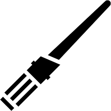
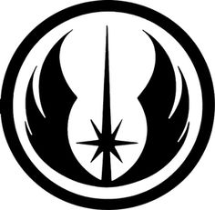
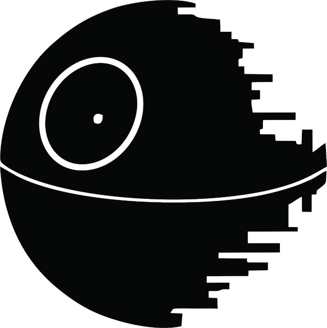
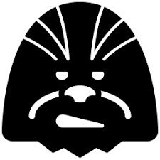

blablabla
Erfahre mehr über unsere Kreaturen und triff so die richtige Entscheidung!
Jedi |
Yoda |

Obi Wan Kenobi |

Beliebiger Jedi |
Galaktisches Imperium |
Darth Vader |
Stormtrooper |

Wilhuff Tarkin |
Widerstand |
Prinzessin Leia |
Han Solo |

Chewbacca |
Jedi
Meister Yoda
Über Yodas wahre Herkunft ist nur sehr wenig bekannt. Seine Spezies ist ebenso ungeklärt wie der Planet auf dem er geboren wurde. Yoda besaß eine bislang ungewöhnlich hohe Konzentration an Midi-Chlorianern, wodurch sein Potenzial die Macht zu benutzen enorm ausgeprägt war
Obi Wan Kenobi
Obi-Wan Kenobi, oder später Ben Kenobi, war ein Jedi-Meister des Alten Ordens, der im Laufe seines Lebens die Geschichte der Galaxis und des Jedi-Ordens maßgeblich prägte. Der besonnene und ruhige Jedi zeichnete sich durch ein gutes diplomatisches Gespür aus und wurde in Kriegszeiten als ein fähiger Unterhändler bekannt. Darüber hinaus war er ein Meister sowohl im Umgang mit der Macht als auch dem Lichtschwert, und trotz seiner Abneigung gegen das Fliegen, ein exzellenter Pilot.
Beliebiger Jedi
Die Jedi waren machtbegabte Individuen, meist Mitglieder des Jedi-Ordens, welche die helle Seite der Macht studiert, erforscht und dieser gedient haben. Die übliche Waffe der Jedi war das Lichtschwert, welches aus reiner Energie erschaffen wird. Die Jedi kämpften für Gerechtigkeit, Frieden und Harmonie in der Galaktischen Republik, meistens gegen die Nutzer der dunklen Seite der Macht, den Sith.
Galaktisches Imperium
Darth Vader
Früher bekannt als Anakin Skywalter - Seine Eigenwilligkeit, seine Arroganz und seine Angst vor Verlust ermöglichten es dem Sith-Lord Darth Sidious, Anakin auf die dunkle Seite der Macht zu ziehen.
Stormtrooper
Die Sturmtruppen, im Singular Sturmtruppler, waren durchschnittlich 1,83 Meter groß und die Elite des imperialen Militärs, welche ursprünglich aus den Klonkriegern der Galaktischen Republik entstanden. Zusammen mit der Imperialen Armee sowie der Imperialen Flotte bildeten die Sturmtruppen das Militär des Galaktischen Imperiums. Sie repräsentierten die größte Gesamtstreitmacht in der Geschichte der Galaxis. Obgleich die Sturmtruppen die Armee sowie die Flotte mit Truppen versorgten, waren sie eine separate Einheit, welche direkt dem Imperator unterstellt war und sich durch ihre bedingungslose Loyalität ihm gegenüber auszeichnete.
Wilhuff Tarkin
Wilhuff Tarkin war ein von Eriadu stammendes Mitglied der Familie Tarkin. Nach seiner Ausbildung auf dem Aasplateau trat er den Randregion-Wächtern bei und verteidigte den Seswenna-Sektor gegen Piraten. Später besuchte er noch einige Akademien, bis er an der Richter-Akademie aufgenommen wurde und seine Führungsqualitäten bei der Mission von Halcyon unter Beweis stellte. Er gründete die Tarkin-Initiative, welche für den Bau des Todessterns zuständig war
Der Widerstand
Prinzessin Leia
Leia Organa, geborene Leia Amidala Skywalker, war eine Senatorin des Imperialen Senat. Sie war die leibliche Tochter von Padmé Amidala und Anakin Skywalker, die Zwillingsschwester von Luke Skywalker und die Mutter von Kylo Ren. Als eine der Schlüsselfiguren der Rebellen-Allianz erlangte sie galaxisweite Berühmtheit und nahm an den wichtigsten Schlachten gegen das Imperium teil. Etwa dreißig Jahre nach der Schlacht von Endor leitete sie als Generälin den Widerstand gegen die Erste Ordnung.
Han Solo
Der Schmuggler Han Solo ist eigenen Angaben nach "vom einen Ende der Galaxis zum anderen" geflogen und traf neben "allerhand seltsamen Zeugs" auch auf den Wookiee Chewbacca, welcher zu seinem Partner und Kopiloten wurde. Der Captain des Millennium Falken machte den Kessel-Flug in weniger als Zwölf Parsecs und schaffte es mit der Geschwindigkeit seines modifizierten Schiffs sogar imperiale Sternzerstörer abzuhängen.
Chewbacca
Chewbacca war ein auf dem Planeten Kashyyyk geborener Wookiee, der durch das für seine Spezies typische braune Fell und die überdurchschnittliche Größe auffiel. 200 Jahre vor der Schlacht von Yavin geboren, erlebte er die Anfangszeiten der Klonkriege und wirkte auch bei der Schlacht um seinen Heimatplaneten mit, wo er auf Seiten der Galaktischen Republik kämpfte. Irgendwann traf er auf dencorellianischen Schmuggler Han Solo, dem er fortan als treuer Partner beistand. So war er Kopilot an Bord von Solos Schiff, dem Millennium Falken, aber auch Navigator und Mechatroniker.